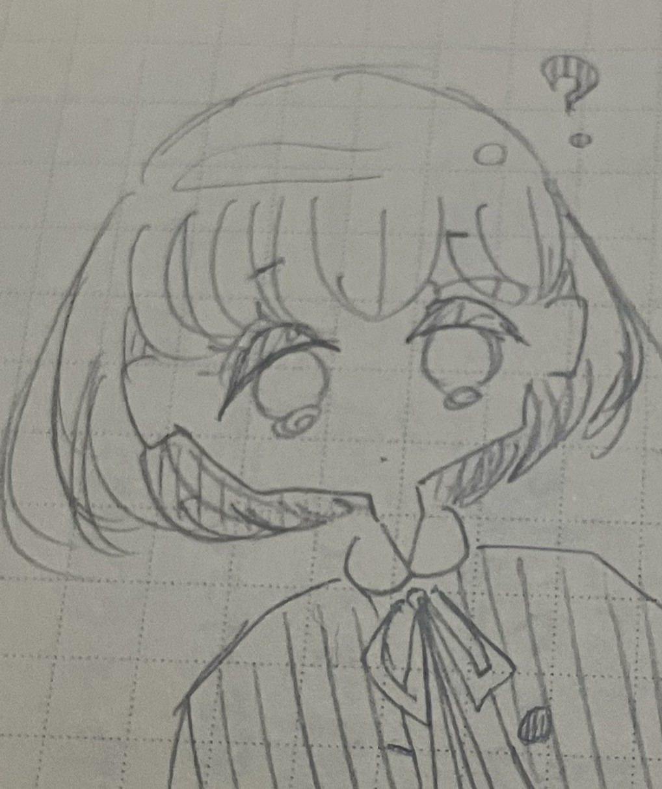

絵を描くこと

一つ目の趣味は、絵を描くことです。
昔から絵を描くのが好きで、今でも時間があるときは絵を描いています。昔は漫画のような絵を描くことが好きで、今でもたまに描きますが、最近はデフォルメというキャラクターを小さくして描くことにハマっています。昔からアナログで絵を描いていて、パソコンやスマホで絵を描くデジタルの手法は苦手なのですが、友人がいつもスマホを使って、デジタルで絵を描いていて、凄いなと思っています。
一つ目の趣味は、絵を描くことです。
昔から絵を描くのが好きで、今でも時間があるときは絵を描いています。昔は漫画のような絵を描くことが好きで、今でもたまに描きますが、最近はデフォルメというキャラクターを小さくして描くことにハマっています。昔からアナログで絵を描いていて、パソコンやスマホで絵を描くデジタルの手法は苦手なのですが、友人がいつもスマホを使って、デジタルで絵を描いていて、凄いなと思っています。
二つ目の趣味は、音楽を聴くことです。
高校や大学でも、通学のときはいつも音楽を聴いています。最近はずっとボカロを聴いていて、ボカロというジャンルは常に新しい曲が生み出されていて飽きないので、ずっと昔から聴いています。
特に最近よく聴くのは『バグ』という曲で、プロセカというゲームで作られた曲なのですが、中毒性が高く、YouTubeでは800万回再生を超えています。
この曲は昔よく聴いていた『ODDS&ENDS』という曲なのですが、歌詞がとても良く、初めて聴いたときにとても感動したことを今でも覚えています。ボカロや機械の声に嫌悪感を抱いている人に、特に聴いてほしい曲です。
三つ目の趣味は、実況動画を観ることです。
昔からニコニコ動画やYouTubeで実況動画を観ていて、今でも課題の合間や寝る前に観ています。昔はゲーム実況動画と言わないと伝わりませんでしたが、今では実況動画だけで伝わるようになり、ゲーム実況の人気が出てきているんだなと感じています。
特に好きなシリーズは、わいわいさんという方が投稿した『あつまれどうぶつの森』です。わいわいさんは特にトーク力が凄く、話のネタも毎回ハズレがなくて面白いです。
ジャック・オ・蘭たんさんという方が投稿した『ときめきメモリアル Girl's Side 3rd Story』も好きなシリーズです。最近最終回を迎えたシリーズなのですが、蘭たんさんが投稿した後、毎回Twitterでは関連のワードがトレンド入りしていて、最近の実況動画で最も話題になっていたのではないかと思います。
蘭たんさんがゲーム内のキャラクターに本気で向き合っていく姿がとても面白くて、私も投稿されたらすぐ観ていました。